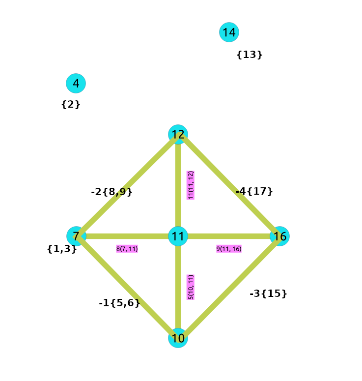

Contraction - Family of functions¶
Introduction¶
In large graphs, like the road graphs, or electric networks, graph contraction can be used to speed up some graph algorithms. Contraction reduces the size of the graph by removing some of the vertices and edges and, for example, might add edges that represent a sequence of original edges decreasing the total time and space used in graph algorithms.
This implementation gives a flexible framework for adding contraction algorithms in the future, currently, it supports two algorithms:
Dead end contraction
Linear contraction
Allowing the user to:
Forbid contraction on a set of nodes.
Decide the order of the contraction algorithms and set the maximum number of times they are to be executed.
Dead end contraction¶
Contraction of the leaf nodes of the graph.
Dead end¶
A node is considered a dead end node when
On undirected graphs:
The number of adjacent vertices is 1.
On directed graphs:
The number of adjacent vertices is 1.
There are no outgoing edges and has at least one incoming edge.
There are no incoming edges and has at least one outgoing edge.
When the conditions are true then the Operation: Dead End Contraction can be done.
Dead end vertex on undirected graph¶
The green nodes are dead end nodes
The blue nodes have an unlimited number of edges.
![graph G {
u, v [shape=circle;style=filled;width=.4;color=deepskyblue];
a, b [style=filled; color=green];
G [shape=tripleoctagon;width=1.5;style=filled;
color=deepskyblue;label = "Rest of the Graph"];
rankdir=LR;
G -- {u, v} [dir=none, weight=1, penwidth=3];
u -- a [color=black];
u -- a [color=darkgray];
v -- b;
}](_images/graphviz-133c3d00246c459c4912dd2d409ee878545598e4.png)
Node |
Adjecent nodes |
Number of adjacent nodes |
|---|---|---|
\(a\) |
\(\{u\}\) |
1 |
\(b\) |
\(\{v\}\) |
1 |
Dead end vertex on directed graph¶
The green nodes are dead end nodes
The blue nodes have an unlimited number of incoming and/or outgoing edges.
![digraph G {
u, v, w, x, y [shape=circle;style=filled;width=.4;color=deepskyblue];
a, b, c, d, e [style=filled; color=green];
G [shape=tripleoctagon;width=1.5;style=filled;
color=deepskyblue;label = "Rest of the Graph"];
rankdir=LR;
G -> {u, v, w} [dir=none, weight=1, penwidth=3];
{x, y} -> G [dir=none, weight=1, penwidth=3];
u -> a -> u;
v -> b;
{w, v} -> c;
d -> x;
e -> {x, y};
}](_images/graphviz-5efe3d7b813da1c75d98039a1a2825ccb5f14744.png)
Node |
Adjecent nodes |
Number of adjacent nodes |
Number of incoming edges |
Number of outgoing edges |
|---|---|---|---|---|
\(a\) |
\(\{u\}\) |
1 |
||
\(b\) |
\(\{v\}\) |
1 |
||
\(c\) |
\(\{v, w\}\) |
2 |
2 |
0 |
\(d\) |
\(\{x\}\) |
1 |
||
\(e\) |
\(\{x, y\}\) |
2 |
0 |
2 |
From above, nodes \(\{a, b, d\}\) are dead ends because the number of adjacent vertices is 1. No further checks are needed for those nodes.
On the following table, nodes \(\{c, e\}\) because the even that the number of adjacent vertices is not 1 for
\(c\)
There are no outgoing edges and has at least one incoming edge.
\(e\)
There are no incoming edges and has at least one outgoing edge.
Operation: Dead End Contraction¶
The dead end contraction will stop until there are no more dead end nodes. For example from the following graph where \(w\) is the dead end node:
![digraph G {
u, v [shape=circle;style=filled;width=.4;color=deepskyblue];
w [style=filled; color=green];
"G" [shape=tripleoctagon;style=filled;
color=deepskyblue; label = "Rest of the Graph"];
rankdir=LR;
G -> u [dir=none, weight=1, penwidth=3];
u -> v -> w;
}](_images/graphviz-4fdcd0305dbfbab90073ec9514716ef0ad1e4f76.png)
After contracting \(w\), node \(v\) is now a dead end node and is contracted:
![digraph G {
u [shape=circle;style=filled;width=.4;color=deepskyblue];
v [style=filled; color=green, label="v{w}"];
"G" [shape=tripleoctagon;style=filled;
color=deepskyblue; label = "Rest of the Graph"];
rankdir=LR;
G -> u [dir=none, weight=1, penwidth=3];
u -> v;
}](_images/graphviz-82174f96e766deeae75a75488fa01f23af7da497.png)
After contracting \(v\), stop. Node \(u\) has the information of nodes that were contrcted.
![digraph G {
u [style=filled; color=green, label="u{v,w}"];
"G" [shape=tripleoctagon;style=filled;
color=deepskyblue; label = "Rest of the Graph"];
rankdir=LR;
G -> u [dir=none, weight=1, penwidth=3];
}](_images/graphviz-2d7779194092aa64d7a74051e7b24d8a962d9e0f.png)
Node \(u\) has the information of nodes that were contracted.
Linear contraction¶
In the algorithm, linear contraction is represented by 2.
Linear¶
In case of an undirected graph, a node is considered a linear node when
The number of adjacent vertices is 2.
In case of a directed graph, a node is considered a linear node when
The number of adjacent vertices is 2.
Linearity is symmetrical
Linear vertex on undirected graph¶
The green nodes are linear nodes
The blue nodes have an unlimited number of incoming and outgoing edges.
Undirected
![graph G {
u, w [shape=circle;style=filled;width=.4;color=deepskyblue];
v [style=filled; color=green];
G [shape=tripleoctagon;width=1.5;style=filled;
color=deepskyblue;label = "Rest of the Graph"];
rankdir=LR;
w -- G -- u [dir=none, weight=1, penwidth=3];
u -- v -- w;
}](_images/graphviz-5565c2a3e64a5e493dd60c052a86cee32c294e38.png)
Node |
Adjecent nodes |
Number of adjacent nodes |
|---|---|---|
\(v\) |
\(\{u, w\}\) |
2 |
Linear vertex on directed graph¶
The green nodes are linear nodes
The blue nodes have an unlimited number of incoming and outgoing edges.
The white node is not linear because the linearity is not symetrical.
It is possible to go \(y \rightarrow c \rightarrow z\)
It’s not possible to go \(z \rightarrow c \rightarrow y\)
![digraph G {
u, v, w, x, y, z [shape=circle;style=filled;width=.4;color=deepskyblue];
a, b [style=filled; color=green];
G [shape=tripleoctagon;width=1.5;style=filled;
color=deepskyblue;label = "Rest of the Graph"];
rankdir=LR;
{u, v} -> G -> {x, w, y, z} [dir=none, weight=1, penwidth=3];
u -> a -> v;
w -> b -> x;
x -> b -> w [color=darkgray];
y -> c -> z -> c;
}](_images/graphviz-726b2c9e619c1609c8d06996b6392b09095c2986.png)
Node |
Adjecent nodes |
Number of adjacent nodes |
Is symmetrical? |
|---|---|---|---|
\(a\) |
\(\{u, v\}\) |
2 |
yes |
\(b\) |
\(\{w, x\}\) |
2 |
yes |
\(c\) |
\(\{y, z\}\) |
2 |
no |
Operation: Linear Contraction¶
The linear contraction will stop when there are no more linear nodes. For example from the following graph where \(v\) and \(w\) are linear nodes:
![digraph G {
u, z [shape=circle;style=filled;color=deepskyblue];
v, w [style=filled; color=green];
"G" [shape=tripleoctagon; style=filled;
color=deepskyblue;label = "Rest of the Graph"];
rankdir=LR;
G -> {u, z} [dir=none, weight=1, penwidth=3];
u -> v -> w -> z;
}](_images/graphviz-5d6780661464bc07b07b2af1a5d6b5f8f36ca90a.png)
Contracting \(w\),
The vertex \(w\) is removed from the graph
The edges \(v \rightarrow w\) and \(w \rightarrow z\) are removed from the graph.
A new edge \(v \rightarrow z\) is inserted represented with red color.
![digraph G {
u, z [shape=circle;style=filled;color=deepskyblue];
v [style=filled; color=green];
"G" [shape=tripleoctagon; style=filled;
color=deepskyblue;label = "Rest of the Graph"];
rankdir=LR;
G -> {u, z} [dir=none, weight=1, penwidth=3];
u -> v;
v -> z [label="{w}";color=red]
}](_images/graphviz-14be5626ee411f35a47287f42c24255e0dc350bb.png)
Contracting \(v\):
The vertex \(v\) is removed from the graph
The edges \(u \rightarrow v\) and \(v \rightarrow z\) are removed from the graph.
A new edge \(u \rightarrow z\) is inserted represented with red color.
![digraph G {
u, z [shape=circle;style=filled;color=deepskyblue];
"G" [shape=tripleoctagon; style=filled;
color=deepskyblue;label = "Rest of the Graph"];
rankdir=LR;
G -> {u, z} [dir=none, weight=1, penwidth=3];
u -> z [label="{v, w}";color=red]
}](_images/graphviz-12be2629d707913e64a07fee1e387ff25af98fb6.png)
Edge \(u \rightarrow z\) has the information of nodes that were contracted.
The cycle¶
Contracting a graph, can be done with more than one operation. The order of the operations affect the resulting contracted graph, after applying one operation, the set of vertices that can be contracted by another operation changes.
This implementation, cycles max_cycles times through operations_order .
<input>
do max_cycles times {
for (operation in operations_order)
{ do operation }
}
<output>
Contracting sample data¶
In this section, building and using a contracted graph will be shown by example.
The Sample Data for an undirected graph is used
a dead end operation first followed by a linear operation.
Construction of the graph in the database¶
Original Data
The following query shows the original data involved in the contraction operation.
SELECT id, source, target, cost, reverse_cost
FROM edges ORDER BY id;
id | source | target | cost | reverse_cost
----+--------+--------+------+--------------
1 | 5 | 6 | 1 | 1
2 | 6 | 10 | -1 | 1
3 | 10 | 15 | -1 | 1
4 | 6 | 7 | 1 | 1
5 | 10 | 11 | 1 | -1
6 | 1 | 3 | 1 | 1
7 | 3 | 7 | 1 | 1
8 | 7 | 11 | 1 | 1
9 | 11 | 16 | 1 | 1
10 | 7 | 8 | 1 | 1
11 | 11 | 12 | 1 | -1
12 | 8 | 12 | 1 | -1
13 | 12 | 17 | 1 | -1
14 | 8 | 9 | 1 | 1
15 | 16 | 17 | 1 | 1
16 | 15 | 16 | 1 | 1
17 | 2 | 4 | 1 | 1
18 | 13 | 14 | 1 | 1
(18 rows)
The original graph:

Contraction results¶
The results do not represent the contracted graph. They represent the changes done to the graph after applying the contraction algorithm.
Observe that vertices, for example, \(6\) do not appear in the results because it was not affected by the contraction algorithm.
SELECT * FROM pgr_contraction(
'SELECT id, source, target, cost, reverse_cost FROM edges',
array[1, 2], directed => false);
type | id | contracted_vertices | source | target | cost
------+----+---------------------+--------+--------+------
v | 4 | {2} | -1 | -1 | -1
v | 7 | {1,3} | -1 | -1 | -1
v | 14 | {13} | -1 | -1 | -1
e | -1 | {5,6} | 7 | 10 | 2
e | -2 | {8,9} | 7 | 12 | 2
e | -3 | {15} | 10 | 16 | 2
e | -4 | {17} | 12 | 16 | 2
(7 rows)
After doing the dead end contraction operation:

After doing the linear contraction operation to the graph above:
{kind=link}
The process to create the contraction graph on the database:
Add additional columns¶
Adding extra columns to the edge_table and edge_table_vertices_pgr
tables, where:
Column |
Description |
|---|---|
|
The vertices set belonging to the vertex/edge |
|
On the vertex table
|
|
On the edge table
|
ALTER TABLE vertices ADD is_contracted BOOLEAN DEFAULT false;
ALTER TABLE
ALTER TABLE vertices ADD contracted_vertices BIGINT[];
ALTER TABLE
ALTER TABLE edges ADD is_new BOOLEAN DEFAULT false;
ALTER TABLE
ALTER TABLE edges ADD contracted_vertices BIGINT[];
ALTER TABLE
Store contraction information¶
Store the contraction results in a table
SELECT * INTO contraction_results
FROM pgr_contraction(
'SELECT id, source, target, cost, reverse_cost FROM edges',
array[1, 2], directed => false);
SELECT 7
The vertex table update¶
Use is_contracted column to indicate the vertices that are contracted.
UPDATE vertices
SET is_contracted = true
WHERE id IN (SELECT unnest(contracted_vertices) FROM contraction_results);
UPDATE 10
Fill contracted_vertices with the information from the results tha belong to
the vertices.
UPDATE vertices
SET contracted_vertices = contraction_results.contracted_vertices
FROM contraction_results
WHERE type = 'v' AND vertices.id = contraction_results.id;
UPDATE 3
The modified vertices table:
SELECT id, contracted_vertices, is_contracted
FROM vertices
ORDER BY id;
id | contracted_vertices | is_contracted
----+---------------------+---------------
1 | | t
2 | | t
3 | | t
4 | {2} | f
5 | | t
6 | | t
7 | {1,3} | f
8 | | t
9 | | t
10 | | f
11 | | f
12 | | f
13 | | t
14 | {13} | f
15 | | t
16 | | f
17 | | t
(17 rows)
The edge table update¶
Insert the new edges generated by pgr_contraction.
INSERT INTO edges(source, target, cost, reverse_cost, contracted_vertices, is_new)
SELECT source, target, cost, -1, contracted_vertices, true
FROM contraction_results
WHERE type = 'e';
INSERT 0 4
The modified edge_table.
SELECT id, source, target, cost, reverse_cost, contracted_vertices, is_new
FROM edges
ORDER BY id;
id | source | target | cost | reverse_cost | contracted_vertices | is_new
----+--------+--------+------+--------------+---------------------+--------
1 | 5 | 6 | 1 | 1 | | f
2 | 6 | 10 | -1 | 1 | | f
3 | 10 | 15 | -1 | 1 | | f
4 | 6 | 7 | 1 | 1 | | f
5 | 10 | 11 | 1 | -1 | | f
6 | 1 | 3 | 1 | 1 | | f
7 | 3 | 7 | 1 | 1 | | f
8 | 7 | 11 | 1 | 1 | | f
9 | 11 | 16 | 1 | 1 | | f
10 | 7 | 8 | 1 | 1 | | f
11 | 11 | 12 | 1 | -1 | | f
12 | 8 | 12 | 1 | -1 | | f
13 | 12 | 17 | 1 | -1 | | f
14 | 8 | 9 | 1 | 1 | | f
15 | 16 | 17 | 1 | 1 | | f
16 | 15 | 16 | 1 | 1 | | f
17 | 2 | 4 | 1 | 1 | | f
18 | 13 | 14 | 1 | 1 | | f
19 | 7 | 10 | 2 | -1 | {5,6} | t
20 | 7 | 12 | 2 | -1 | {8,9} | t
21 | 10 | 16 | 2 | -1 | {15} | t
22 | 12 | 16 | 2 | -1 | {17} | t
(22 rows)
The contracted graph¶
Vertices that belong to the contracted graph.¶
SELECT id
FROM vertices
WHERE is_contracted = false
ORDER BY id;
id
----
4
7
10
11
12
14
16
(7 rows)
Edges that belong to the contracted graph.¶
WITH
vertices_in_graph AS (
SELECT id
FROM vertices
WHERE is_contracted = false
)
SELECT id, source, target, cost, reverse_cost, contracted_vertices
FROM edges
WHERE source IN (SELECT * FROM vertices_in_graph)
AND target IN (SELECT * FROM vertices_in_graph)
ORDER BY id;
id | source | target | cost | reverse_cost | contracted_vertices
----+--------+--------+------+--------------+---------------------
5 | 10 | 11 | 1 | -1 |
8 | 7 | 11 | 1 | 1 |
9 | 11 | 16 | 1 | 1 |
11 | 11 | 12 | 1 | -1 |
19 | 7 | 10 | 2 | -1 | {5,6}
20 | 7 | 12 | 2 | -1 | {8,9}
21 | 10 | 16 | 2 | -1 | {15}
22 | 12 | 16 | 2 | -1 | {17}
(8 rows)
Contracted graph¶

Using the contracted graph¶
Using the contracted graph with pgr_dijkstra
There are three cases when calculating the shortest path between a given source and target in a contracted graph:
Case 1: Both source and target belong to the contracted graph.
Case 2: Source and/or target belong to an edge subgraph.
Case 3: Source and/or target belong to a vertex.
Case 1: Both source and target belong to the contracted graph.¶
Using the Edges that belong to the contracted graph. on lines 10 to 19.
1CREATE OR REPLACE FUNCTION my_dijkstra(
2 departure BIGINT, destination BIGINT,
3 OUT seq INTEGER, OUT path_seq INTEGER,
4 OUT node BIGINT, OUT edge BIGINT,
5 OUT cost FLOAT, OUT agg_cost FLOAT)
6RETURNS SETOF RECORD AS
7$BODY$
8SELECT * FROM pgr_dijkstra(
9 $$
10 WITH
11 vertices_in_graph AS (
12 SELECT id
13 FROM vertices
14 WHERE is_contracted = false
15 )
16 SELECT id, source, target, cost, reverse_cost
17 FROM edges
18 WHERE source IN (SELECT * FROM vertices_in_graph)
19 AND target IN (SELECT * FROM vertices_in_graph)
20 $$,
21 departure, destination, false);
22$BODY$
23LANGUAGE SQL VOLATILE;
24CREATE FUNCTION
Case 1
When both source and target belong to the contracted graph, a path is found.
SELECT * FROM my_dijkstra(10, 12);
seq | path_seq | node | edge | cost | agg_cost
-----+----------+------+------+------+----------
1 | 1 | 10 | 5 | 1 | 0
2 | 2 | 11 | 11 | 1 | 1
3 | 3 | 12 | -1 | 0 | 2
(3 rows)
Case 2
When source and/or target belong to an edge subgraph then a path is not found.
In this case, the contracted graph do not have an edge connecting with node \(4\).
SELECT * FROM my_dijkstra(15, 12);
seq | path_seq | node | edge | cost | agg_cost
-----+----------+------+------+------+----------
(0 rows)
Case 3
When source and/or target belong to a vertex then a path is not found.
In this case, the contracted graph do not have an edge connecting with node \(7\) and of node \(4\) of the second case.
SELECT * FROM my_dijkstra(15, 1);
seq | path_seq | node | edge | cost | agg_cost
-----+----------+------+------+------+----------
(0 rows)
Case 2: Source and/or target belong to an edge subgraph.¶
Refining the above function to include nodes that belong to an edge.
The vertices that need to be expanded are calculated on lines 10 to 16.
Adding to the contracted graph that additional section on lines 25 to 27.
1CREATE OR REPLACE FUNCTION my_dijkstra(
2 departure BIGINT, destination BIGINT,
3 OUT seq INTEGER, OUT path_seq INTEGER,
4 OUT node BIGINT, OUT edge BIGINT,
5 OUT cost FLOAT, OUT agg_cost FLOAT)
6RETURNS SETOF RECORD AS
7$BODY$
8SELECT * FROM pgr_dijkstra(
9 $$
10 WITH
11 edges_to_expand AS (
12 SELECT id
13 FROM edges
14 WHERE ARRAY[$$ || departure || $$]::BIGINT[] <@ contracted_vertices
15 OR ARRAY[$$ || destination || $$]::BIGINT[] <@ contracted_vertices
16 ),
17
18 vertices_in_graph AS (
19 SELECT id
20 FROM vertices
21 WHERE is_contracted = false
22
23 UNION
24
25 SELECT unnest(contracted_vertices)
26 FROM edges
27 WHERE id IN (SELECT id FROM edges_to_expand)
28 )
29
30 SELECT id, source, target, cost, reverse_cost
31 FROM edges
32 WHERE source IN (SELECT * FROM vertices_in_graph)
33 AND target IN (SELECT * FROM vertices_in_graph)
34 $$,
35 departure, destination, false);
36$BODY$
37LANGUAGE SQL VOLATILE;
38CREATE FUNCTION
Case 1
When both source and target belong to the contracted graph, a path is found.
SELECT * FROM my_dijkstra(10, 12);
seq | path_seq | node | edge | cost | agg_cost
-----+----------+------+------+------+----------
1 | 1 | 10 | 5 | 1 | 0
2 | 2 | 11 | 11 | 1 | 1
3 | 3 | 12 | -1 | 0 | 2
(3 rows)
Case 2
When source and/or target belong to an edge subgraph, now, a path is found.
The routing graph now has an edge connecting with node \(4\).
SELECT * FROM my_dijkstra(15, 12);
seq | path_seq | node | edge | cost | agg_cost
-----+----------+------+------+------+----------
1 | 1 | 15 | 16 | 1 | 0
2 | 2 | 16 | 22 | 2 | 1
3 | 3 | 12 | -1 | 0 | 3
(3 rows)
Case 3
When source and/or target belong to a vertex then a path is not found.
In this case, the contracted graph do not have an edge connecting with node \(7\).
SELECT * FROM my_dijkstra(15, 1);
seq | path_seq | node | edge | cost | agg_cost
-----+----------+------+------+------+----------
(0 rows)
Case 3: Source and/or target belong to a vertex.¶
Refining the above function to include nodes that belong to an edge.
The vertices that need to be expanded are calculated on lines 18 to 23.
Adding to the contracted graph that additional section on lines 38 to 40.
1CREATE OR REPLACE FUNCTION my_dijkstra(
2 departure BIGINT, destination BIGINT,
3 OUT seq INTEGER, OUT path_seq INTEGER,
4 OUT node BIGINT, OUT edge BIGINT,
5 OUT cost FLOAT, OUT agg_cost FLOAT)
6RETURNS SETOF RECORD AS
7$BODY$
8SELECT * FROM pgr_dijkstra(
9 $$
10 WITH
11 edges_to_expand AS (
12 SELECT id
13 FROM edges
14 WHERE ARRAY[$$ || departure || $$]::BIGINT[] <@ contracted_vertices
15 OR ARRAY[$$ || destination || $$]::BIGINT[] <@ contracted_vertices
16 ),
17
18 vertices_to_expand AS (
19 SELECT id
20 FROM vertices
21 WHERE ARRAY[$$ || departure || $$]::BIGINT[] <@ contracted_vertices
22 OR ARRAY[$$ || destination || $$]::BIGINT[] <@ contracted_vertices
23 ),
24
25 vertices_in_graph AS (
26 SELECT id
27 FROM vertices
28 WHERE is_contracted = false
29
30 UNION
31
32 SELECT unnest(contracted_vertices)
33 FROM edges
34 WHERE id IN (SELECT id FROM edges_to_expand)
35
36 UNION
37
38 SELECT unnest(contracted_vertices)
39 FROM vertices
40 WHERE id IN (SELECT id FROM vertices_to_expand)
41 )
42
43 SELECT id, source, target, cost, reverse_cost
44 FROM edges
45 WHERE source IN (SELECT * FROM vertices_in_graph)
46 AND target IN (SELECT * FROM vertices_in_graph)
47 $$,
48 departure, destination, false);
49$BODY$
50LANGUAGE SQL VOLATILE;
51CREATE FUNCTION
Case 1
When both source and target belong to the contracted graph, a path is found.
SELECT * FROM my_dijkstra(10, 12);
seq | path_seq | node | edge | cost | agg_cost
-----+----------+------+------+------+----------
1 | 1 | 10 | 5 | 1 | 0
2 | 2 | 11 | 11 | 1 | 1
3 | 3 | 12 | -1 | 0 | 2
(3 rows)
Case 2
The code change do not affect this case so when source and/or target belong to an edge subgraph, a path is still found.
SELECT * FROM my_dijkstra(15, 12);
seq | path_seq | node | edge | cost | agg_cost
-----+----------+------+------+------+----------
1 | 1 | 15 | 16 | 1 | 0
2 | 2 | 16 | 22 | 2 | 1
3 | 3 | 12 | -1 | 0 | 3
(3 rows)
Case 3
When source and/or target belong to a vertex, now, a path is found.
Now, the routing graph has an edge connecting with node \(7\).
SELECT * FROM my_dijkstra(15, 1);
seq | path_seq | node | edge | cost | agg_cost
-----+----------+------+------+------+----------
1 | 1 | 15 | 3 | 1 | 0
2 | 2 | 10 | 19 | 2 | 1
3 | 3 | 7 | 7 | 1 | 3
4 | 4 | 3 | 6 | 1 | 4
5 | 5 | 1 | -1 | 0 | 5
(5 rows)
See Also¶
https://www.cs.cmu.edu/afs/cs/academic/class/15210-f12/www/lectures/lecture16.pdf
https://algo2.iti.kit.edu/documents/routeplanning/geisberger_dipl.pdf
Indices and tables